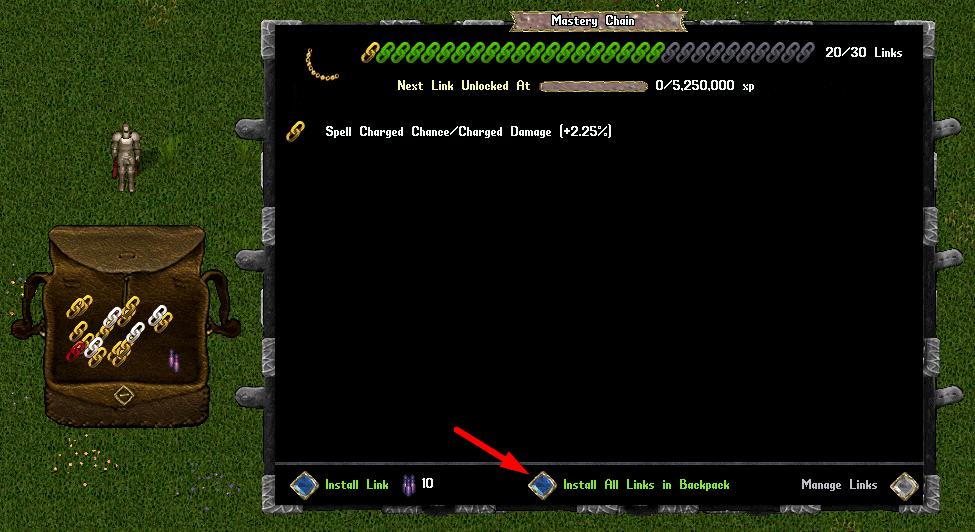
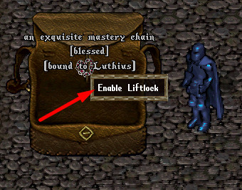
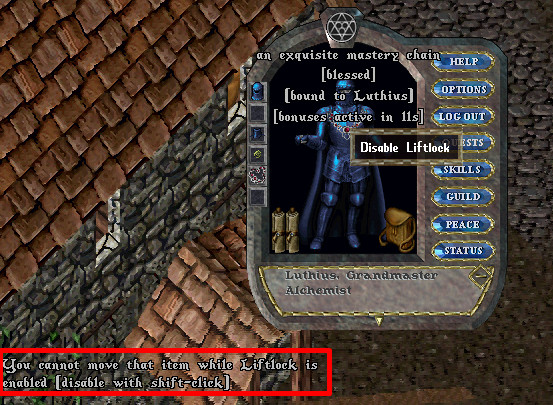
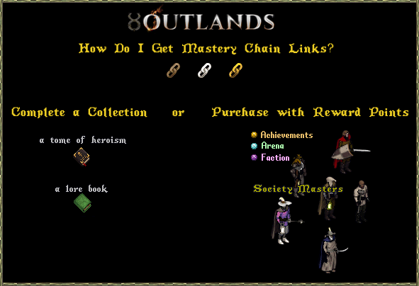
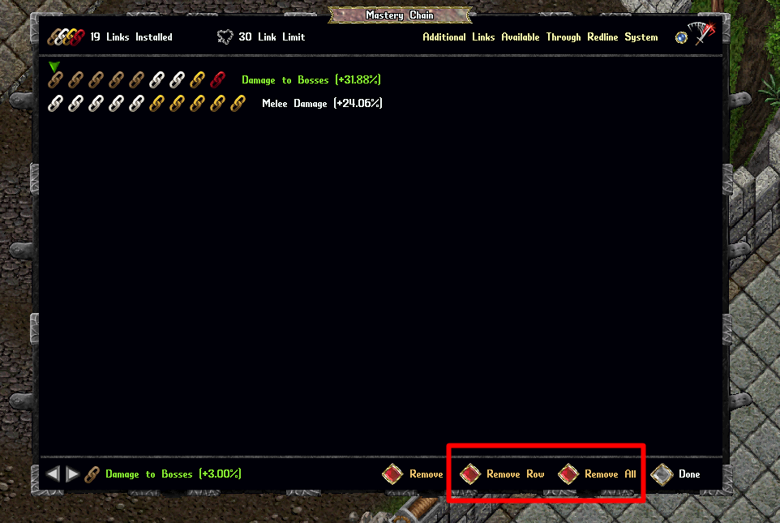
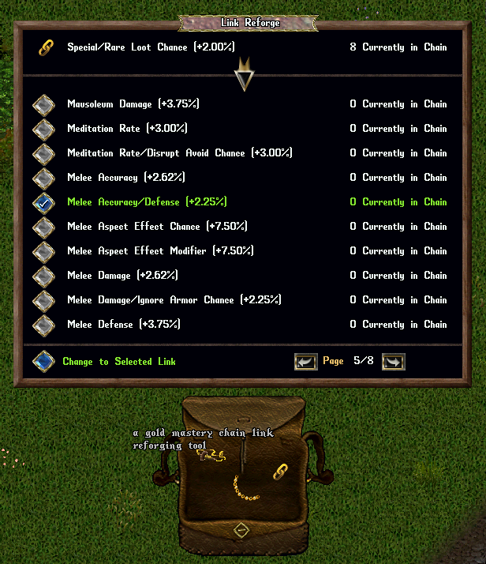
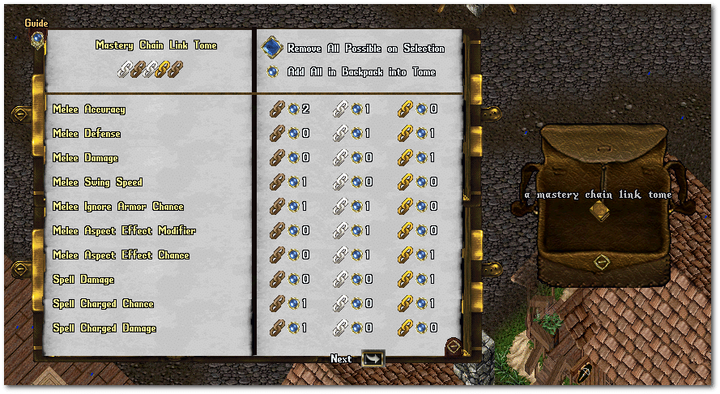

[MasteryChain 命令、双击精通链，或通过角色右键菜单中的「Mastery Chain」选项查看精通链面板。视觉效果不影响机制，只影响外观。共有 11 种可制作外观：
精致 Exquisite |
时尚 Fashionable |
鎏金 Gilded |
双环 Twin Loop |
梨形珠 Briolette |
蛋面 Cabochon |
枝形吊灯 Chandelier |
渐变珠 Graduated Bead |
角坠 Horn Pendant |
层叠 Layered |
绞索 Twisted Cable |
精通链可用（通常为限时的）重铸契约改成独特变体：
牙饰项链 Tooth Necklace |




各链环的当前数值如下：
| 奖励类型 Bonus Type |
青铜 Bronze |
白银 Silver |
黄金 Gold |
腐化 Corrupted |
可选升级 Elective Upgrades |
叠加方式 Multi Type |
|---|---|---|---|---|---|---|
| 吟游类链环 Barding Type Links | ||||||
| 吟游重置/打断无视几率 Bard Reset/Break Ignore Chance | 2.50% | ~3.13% | 3.75% | 4.06% | ||
| 吟游效果持续时间 Barding Effect Durations | 3.00% | 3.75% | 4.50% | ~4.88% | 吟游重置/打断无视几率 | |
| 对被吟游生物伤害 Damage to Barded Creatures | 1.75% | ~2.19% | ~2.63% | ~2.84% | 乘算 | |
| 有效吟游技能 Effective Barding Skill | 3.00 | 3.75 | 4.50 | ~4.88 | 吟游重置/打断无视几率 | |
| 航海类链环 Boating Type Links | ||||||
| 对船只伤害 Damage on Ships | 3.00% | 3.75% | 4.50% | ~4.88% | 乘算 | |
| 船只伤害抗性 Damage Resistance on Ships | 3.00% | 3.75% | 4.50% | ~4.88% | 伤害抗性 | |
| 船炮伤害 Ship Cannon Damage** | 1.50% | ~1.88% | 2.25% | ~2.44% | 加算? | |
| 船员伤害 Crewmember Damage*** | 1.50% | ~1.88% | 2.25% | ~2.44% | 加算? | |
| 船员伤害抗性 Crewmember Damage Resistance*** | 1.50% | ~1.88% | 2.25% | ~2.44% | ||
| 随从类链环 Follower Type Links | ||||||
| 随从命中/防御 Follower Accuracy/Defense*** | 1.50% | ~1.88% | 2.25% | ~2.44% | ||
| 随从攻击速度 Follower Attack Speed | 1.00% | 1.25% | 1.50% | ~1.63% | ||
| 随从伤害 Follower Damage | 2.00% | 2.50% | 3.00% | 3.25% | 随从攻击速度 | 加算 |
| 随从伤害抗性 Follower Damage Resistance | 2.00% | 2.50% | 3.00% | 3.25% | 炼金/治疗/兽医 随从攻击速度 | |
| 随从受到的治疗 Follower Healing Received | 3.00% | 3.75% | 4.50% | ~4.88% | 炼金/治疗/兽医、随从攻击速度 | |
| 近战类链环 Melee Type Links | ||||||
| 近战元素特效几率 Melee Aspect Effect Chance**** | 4.50% | ~5.63% | 6.75% | ~7.31% | ||
| 近战元素特效倍率 Melee Aspect Effect Modifier | 5.00% | 6.25% | 7.50% | ~8.13% | ||
| 近战命中 Melee Accuracy | 1.75% | ~2.19% | ~2.62% | ~2.84% | 近战命中/防御 | |
| 近战防御 Melee Defense | 2.50% | ~3.13% | 3.75% | 4.06% | 近战命中/防御 | |
| 近战命中/防御 Melee Accuracy/Defense | 1.50% | ~1.88% | 2.25% | ~2.44% | ||
| 近战特殊几率 Melee Special Chance** | 2.00% | 2.50% | 3.00% | 3.25% | 近战特殊几率/特殊伤害 | |
| 近战特殊几率/特殊伤害 Melee Special Chance/Special Damage** | 1.75% | ~2.19% | ~2.63% | ~2.88% | 加算 | |
| 近战伤害 Melee Damage** | 3.00% | 3.75% | 4.50% | ~4.88% | 近战伤害/无视护甲几率 | 加算 |
| 近战无视护甲几率 Melee Ignore Armor Chance | 4.00% | 5.00% | 6.00% | 6.50% | 近战伤害/无视护甲几率 | |
| 近战伤害/无视护甲几率 Melee Damage/Ignore Armor Chance** | 2.50% | ~3.13% | 3.75% | ~4.06% | 加算 | |
| 近战挥击速度 Melee Swing Speed**** | 0.80% | 1.00% | 1.20% | 1.30% | ||
| 法术类链环 Spell Type Links | ||||||
| 冥想速率 Meditation Rate | 2.00% | 2.50% | 3.00% | 3.25% | 冥想速率/打断回避几率 | |
| 法术打断回避几率 Spell Disrupt Avoid Chance | 6.00% | 7.50% | 9.00% | 9.75% | 冥想速率/打断回避几率 无随从时法术伤害 | |
| 冥想速率/打断回避几率 Meditation Rate/Disrupt Avoid Chance | 2.00% | 2.50% | 3.00% | 3.25% | 无随从时法术伤害 | |
| 法术元素特效倍率 Spell Aspect Effect Modifier | 5.00% | 6.25% | 7.50% | ~8.13% | ||
| 法术元素特殊几率 Spell Aspect Special Chance**** | 4.50% | ~5.63% | 6.75% | ~7.31% | ||
| 法术充能几率 Spell Charged Chance** | 4.00% | 5.00% | 6.00% | 6.50% | 法术充能几率/充能伤害 | |
| 法术充能伤害 Spell Charged Damage** | 6.00% | 7.50% | 9.00% | 9.75% | 法术充能几率/充能伤害 | 加算 |
| 法术充能几率/充能伤害 Spell Charged Chance/Charged Damage** | 3.50% | ~4.38% | 5.25% | ~5.69% | 加算 | |
| 法术伤害 Spell Damage** | 3.00% | 3.75% | 4.50% | ~4.88% | 法术伤害/无视抗性几率 | 加算 |
| 法术无视抗性几率 Spell Ignore Resist Chance | 4.00% | 5.00% | 6.00% | 6.50% | 法术伤害/无视抗性几率 | |
| 法术伤害/无视抗性几率 Spell Damage/Ignore Resist Chance** | 2.50% | ~3.13% | 3.75% | ~4.06% | 加算 | |
| 无随从时法术伤害 Spell Damage When No Followers** | 4.00% | 5.00% | 6.00% | 6.50% | 加算 | |
| 伤害类链环 Damage Type Links | ||||||
| 背刺伤害 Backstab Damage**** | 4.50% | ~5.63% | 6.75% | ~7.31% | 乘算? | |
| 对患病生物伤害 Damage to Diseased Creatures**** | 1.75% | 2.1875% | 2.625% | 2.84375% | 乘算 | |
| 对流血生物伤害 Damage to Bleeding Creatures | 1.75% | 2.1875% | 2.625% | 2.84375% | 乘算 | |
| 对 BOSS 伤害 Damage to Bosses | 3.00% | 3.75% | 4.50% | ~4.88% | 乘算 | |
| 对 66% 以上血量生物伤害 Damage to Creatures Above 66% HP**** | 2.00% | 2.50% | 3.00% | 3.25% | 玩家造成的伤害 | 乘算 |
| 对 33% 以下血量生物伤害 Damage to Creatures Below 33% HP | 2.50% | ~3.13% | 3.75% | 4.06% | 玩家造成的伤害 | 乘算 |
| 玩家造成的伤害 Damage Dealt By Player | 1.50% | ~1.88% | 2.25% | ~2.44% | 可升级为任意其他类型链环 | 乘算 |
| 陷阱伤害 Trap Damage** | 4.00% | 5.00% | 6.00% | 6.50% | 加算 | |
| 剧毒类链环 Poison Type Links | ||||||
| 对中毒生物伤害 Damage to Poisoned Creatures**** | 1.75% | ~2.19% | ~2.63% | ~2.84% | 乘算 | |
| 有效毒药技能 Effective Poisoning Skill | 3.00 | 3.75 | 4.50 | ~4.88 | 毒伤害/无视抗性、对患病生物伤害 | |
| 毒伤害 Poison Damage** | 7.00% | 8.75% | 10.50% | 11.375% | 毒伤害/无视毒抗 | 乘算? |
| 毒伤害/无视毒抗 Poison Damage/Resist Ignore**** | 4.50% | 5.625% | 6.75% | 7.3125% | 对患病生物伤害 | 乘算? |
| 抗性类链环 Resistance Type Links | ||||||
| BOSS 伤害抗性 Boss Damage Resistance | 2.00% | 2.50% | 3.00% | 3.25% | 伤害抗性 | |
| 伤害抗性 Damage Resistance | 1.00% | 1.25% | 1.50% | ~1.63% | ||
| 物理伤害抗性 Physical Damage Resistance | 1.50% | ~1.88% | 2.25% | ~2.44% | 伤害抗性 | |
| 法术伤害抗性 Spell Damage Resistance | 1.50% | ~1.88% | 2.25% | ~2.44% | 伤害抗性 | |
| 有效技能类链环 Effective Skill Links | ||||||
| 有效炼金技能 Effective Alchemy Skill | 3.00 | 3.75 | 4.50 | ~4.88 | 炼金/治疗/兽医 | |
| 炼金/治疗/兽医 Alchemy/Healing/Veterinary | 3.00 | 3.75 | 4.50 | ~4.88 | 随从攻击速度 | |
| 有效武器学 Effective Arms Lore*** | 3.00 | 3.75 | 4.50 | ~4.88 | ||
| 有效露营技能 Effective Camping Skill*** | 3.00 | 3.75 | 4.50 | ~4.88 | ||
| 骑士精神技能 Chivalry Skill | 2.50 | ~3.13 | 3.75 | 4.06 | ||
| 有效采集技能 Effective Harvest Skill*** | 1.00 | 1.25 | 1.50 | ~1.63 | ||
| 有效魔法抗性技能 Effective Magic Resist Skill | 3.00 | 3.75 | 4.50 | ~4.88 | 伤害抗性 | |
| 死灵法术技能 Necromancy Skill | 2.50 | ~3.13 | 3.75 | 4.06 | 随从伤害 随从伤害抗性 | |
| 有效格挡技能 Effective Parrying Skill | 3.00 | 3.75 | 4.50 | ~4.88 | 伤害抗性 | |
| 对箱子的有效技能 Effective Skill on Chests | 3.00 | 3.75 | 4.50 | ~4.88 | 箱子成功率/进度 | |
| 通灵/铭文 Spirit Speak/Inscription | 2.50 | ~3.13 | 3.75 | 4.06 | 随从伤害 随从伤害抗性 | |
| 其他链环 Other Links | ||||||
| 潜行时 5 额外步数几率 Chance on Stealth for 5 Extra Steps | 5.00% | 6.25% | 7.50% | ~8.13% | 加算 | |
| 箱子成功率/进度 Chest Success Chances/Progress | 3.00% | 3.75% | 4.50% | ~4.88% | ||
| 卓越品质几率 Exceptional Quality Chance*** | 1.50% | ~1.88% | 2.25% | ~2.44% | 乘算 | |
| 金币/达布隆掉落增加 Gold/Doubloon Drop Increase | 1.00% | 1.50% | 2.00% | 2.25% | ||
| 受到的治疗 Healing Received | 3.00% | 3.75% | 4.50% | ~4.88% | 炼金/治疗/兽医 | |
| 特殊战利品几率 Special Loot Chance* | 1.00% | 1.50% | 2.00% | 2.25% | 特殊/稀有战利品几率 | |
| 稀有战利品几率 Rare Loot Chance* | 1.00% | 1.50% | 2.00% | 2.25% | 特殊/稀有战利品几率 | |
| 特殊/稀有战利品几率 Special/Rare Loot Chance | 1.00% | 1.50% | 2.00% | 2.25% | 特殊/稀有战利品几率 | |
| 召唤持续时间与驱散抗性 Summon Duration and Dispel Resist* | 3.00% | 3.75% | 4.5% | 4.88% | 通灵/铭文 | |


玩家可在普雷瓦利亚市场商人处购买链环宝典，用于存放获得的各类链环。

解锁每一个链环槽所需的 XP：
| 链环序号 | 本级所需 XP | 累计 XP |
|---|---|---|
| 1 | 250,000 | 250,000 |
| 2 | 500,000 | 750,000 |
| 3 | 750,000 | 1,500,000 |
| 4 | 1,000,000 | 2,500,000 |
| 5 | 1,250,000 | 3,750,000 |
| 6 | 1,500,000 | 5,250,000 |
| 7 | 1,750,000 | 7,000,000 |
| 8 | 2,000,000 | 9,000,000 |
| 9 | 2,250,000 | 11,250,000 |
| 10 | 2,500,000 | 13,750,000 |
| 11 | 2,750,000 | 16,500,000 |
| 12 | 3,000,000 | 19,500,000 |
| 13 | 3,250,000 | 22,750,000 |
| 14 | 3,500,000 | 26,250,000 |
| 15 | 3,750,000 | 30,000,000 |
| 16 | 4,000,000 | 34,000,000 |
| 17 | 4,250,000 | 38,250,000 |
| 18 | 4,500,000 | 42,750,000 |
| 19 | 4,750,000 | 47,500,000 |
| 20 | 5,000,000 | 52,500,000 |
| 21 | 5,250,000 | 57,750,000 |
| 22 | 5,500,000 | 63,250,000 |
| 23 | 5,750,000 | 69,000,000 |
| 24 | 6,000,000 | 75,000,000 |
| 25 | 6,250,000 | 81,250,000 |
| 26 | 6,500,000 | 87,750,000 |
| 27 | 6,750,000 | 94,500,000 |
| 28 | 7,000,000 | 101,500,000 |
| 29 | 7,250,000 | 108,750,000 |
| 30 | 7,500,000 | 116,250,000 |